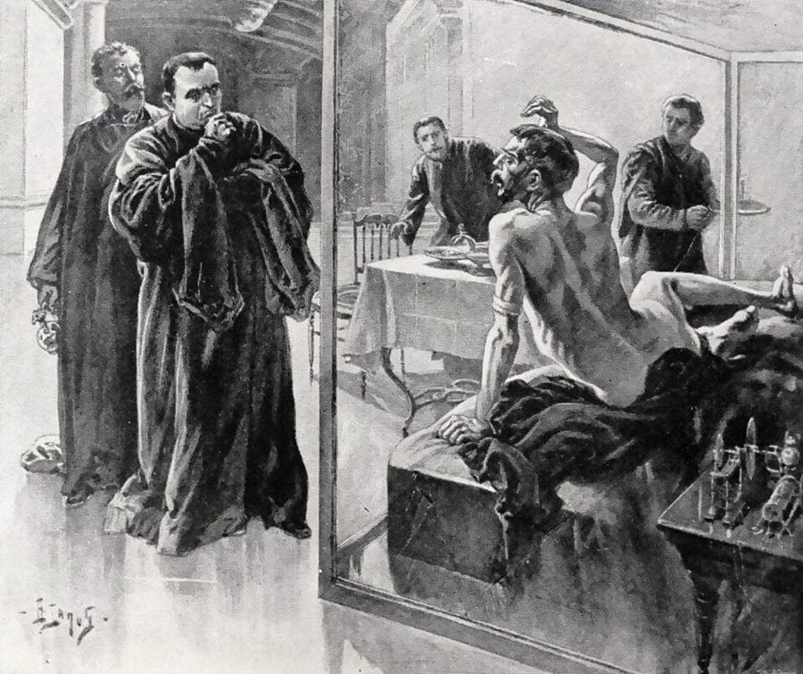

Scotch 是苏格兰威士忌。讲究的喝法是纯喝或只加水；兑甜汽水在当时被看作糟蹋酒，所以服务员要多问一句。
ginger ale 是姜汁汽水（不含酒精），a split 是小瓶装，不到 200 毫升。bitters 是调鸡尾酒用的苦味药酒，一次只加几滴。
场景 3《沉睡者醒来》

威尔斯这部小说 1899 年初版的插图：沉睡者突然醒来。
Henri Lanos 绘，1899，公有领域，维基共享资源
H. G. Wells（写《世界大战》《隐身人》的那位英国作家）1899 年的小说，1910 年改写后叫 The Sleeper Awakes。主人公一觉睡了两百多年，醒来发现存款利滚利，自己成了全世界的主人。
Dan 提它是在说：「睡一觉就发财」这个主意我早知道。保险公司拿这本书当赠品，也是这个道理。
场景 3「Chinese obligation」
当时西方流传一种说法：中国人认为，你救了一个人的命，就得对他负责到底。这不是中国真有的规矩，是西方人对东方的想象，但 1950 年代的美国读者都听过。
Dan 的意思是：收养了猫，就欠它一辈子。
duck 作动词是猛一低头、躲闪。几段之后 Dan 问自己 Why not duck out，用的是同一个词。
under assumed names
… back door under assumed names. Spending …
用假名
assume 这里是「冒用」。
cold as a frozen mackerel
… night cold as a frozen mackerel does …
冷得像条冻鲭鱼
习语有 dead as a mackerel（死得透透的），这里改了一个字。
have the ring of truth
… not have the ring of truth …
听起来像真的
ring 是（钱币敲出来的）声响，真币假币声音不同。
bear down on
… the insurance companies bore down on: …
使劲强调，主打
bore 是 bear 的过去式，不是「使厌烦」。
hold still
… Just hold still and let whatever …
待着别动
go to town on
… they really went to town on, …
在……上大做文章
不是「进城」。go to town = 放开手脚大干。
incontrovertible
… proving with incontrovertible figures that its …
无可辩驳的
这里是反话：每家公司都「无可辩驳地」证明自己最赚钱。
purely for anesthesia
… drinking Scotch purely for anesthesia; instead …
纯粹当麻药用
a case of gin
… for a case of gin and …
一箱杜松子酒
这一章里 case 的第二个意思：箱。整句是气话：拿「现在」去换一箱酒，再把酒全砸了。
certified check
… was a certified check for more …
保付支票
见上面的行话表。
mussed
… getting a little mussed; I had …
弄皱了，弄乱了
go sour
… made my life go sour. So …
变糟，变味
牛奶变质就是 go sour。
go beddy-bye
… me more: go beddy-bye and wake …
睡觉觉
哄小孩的话。用在冷冻三十年上，是故意说得轻巧。
let slip
… seemed to let slip that she …
说漏了嘴
罗斯福 1945 年去世。记得他当总统的人，到 1970 年不会只有二十三岁。
she’d be an obituary
… years, she’d be an obituary. Make …
她就只剩一则讣告了
obituary 是报上的讣告。
make it …
… an obituary. Make it seventy-five and …
那就改成……
点菜、约时间、报数字时改口用。
make strides
… remembered the strides they were making …
取得进展
stride 是大步。
geriatrics
… were making in geriatrics; they were …
老年医学
fiendish
… had a gently fiendish idea, inspired …
恶魔般的，阴损的
fiend 是恶魔。gently fiendish：带点坏的。
rub her nose in it
… younger to rub her nose in …
当面让她难堪，叫她忘不掉
来自训狗：把狗鼻子按到它闯的祸上。
greedy gut
… “Greedy gut,” I told him, and …
馋鬼
gut 是肚肠。
won’t stand for it
… a dog; they won’t stand for …
不吃这一套，不答应
stand for 在否定句里是「容忍」。
go with the house
… Sometimes they go with the house, …
跟着房子走（留给下一家住户）
go with = 随……附带。
wangling
… Army and that takes real wangling. …
耍手腕，走门路
lead with his right
… tendency to lead with his right …
一上来就出右拳
拳击术语。右手拳重但慢，先出右拳会露破绽。Dan 在说猫打架的毛病。
sire
… winning battles and siring kittens for …
（雄性动物）做……的父亲
boil down to
… is what it boils down to …
归根结底就是
把汤熬干剩下的那点东西。
sour as dill pickles
… as sour as dill pickles; that …
酸得像腌黄瓜
dill pickle 是美国最常见的莳萝味酸黄瓜。接着上面的 go sour。
Gesundheit
… up his nose. “Gesundheit,” I answered, …
（对打喷嚏的人说）保重
德语「健康」。美国人常说，等于 Bless you。
场景 4 Pete ignored me. His table …
the after-lunch slump
… was the after-lunch slump and the …
午饭后的冷清时段
slump 是低谷。
MPs
… I said quietly, “MPs, Pete.” …
宪兵来了
military police。当兵时的警报，猫听得懂。
a quick double-O
… booth a quick double-O. “Sorry, friend,” …
迅速打量一遍
俚语。double-O 是两个字母 O，来自 once-over（过一眼）。
come down with
… you’ve come down with an acute …
染上（病）
后面接病名。Dan 接的却是 figure of speech。
figure of speech
… with an acute figure of speech. …
修辞说法，打比方
figure 在这一章的第二个意思（前面是「数字」）。
search warrant
… “Do you have a search warrant?” …
搜查令
make it the same all around
… to make it the same all …
每位照原样再来一份
酒吧里续杯的说法。all around 是「在座每一位」，这里包括猫。
a license to consider
… I’ve got a license to consider. …
我得顾着营业执照
have … to consider：有某事要顾及。
on the house
… and have it...on the house. But …
店家请客
the house 指店家。场景 5 里的 the house 是赌场庄家，同一个用法。
No hard feelings?
… he looked up. “No hard feelings?” …
不记仇吧？
吵完架讲和的套话。
suit yourself
… “Suit yourself. The ordinance doesn’t say …
随你的便
ordinance 是市里的条例。
a dash of bitters
… with a dash of bitters, but …
加几滴苦精
dash 是「一点点」（调酒、做菜的量词）。
drink it straight
… but he’ll drink it straight if …
什么都不兑，直接喝
joint
… ceiling of the joint had a …
（不怎么样的）小店
俚语，指酒吧、小馆子，略带贬义。
periscope
… use them as periscopes without leaving …
潜望镜
station
… as periscopes without leaving his station. …
岗位
不是车站。
That settles it
… being spied on. That settles it.” …
那就这么定了
stall
… there’s no point in stalling.” …
拖延
发动机熄火也是 stall。
unanimous
… “Unanimous. It’s right across the street.” …
全票通过
一人一猫，两票。
场景 5 The receptionist at the Mutual …
streamlined for about Mach Four
… streamlined for about Mach Four, she …
流线型做到了四马赫的水平
整句是用飞机的术语（流线型、雷达罩、基本任务）形容前台的身材。1950 年代的写法，现在读来轻佻。
client executive
… one of our client executives is …
客户经理
Dan 说的是 salesman，前台把它换成了体面的头衔。
Our Mr. Powell
… she added, “Our Mr. Powell will …
本公司的鲍威尔先生
老派商务用语。Dan 此后一直这么叫他，是在挖苦。
do well for itself
… Mutual did pretty well for itself. …
混得不错，赚得不少
camera floater
… write you a camera floater for …
一份相机保险单
floater 是保「随身带着走的贵重物品」的小额保单。seven bucks 是七美元。
get their patty-paws on
… let them get their patty-paws on …
把爪子伸到……上
get one’s hands on = 弄到手。patty-paws 是逗小孩的「小手手」，Dan 换上去损人。
reverently
… wise decision,” he said reverently. “I …
虔敬地
像在教堂里说话。后面还有一句「我以为他要画十字了」。
physical examination
… arrange for your physical examination at …
体检
后文简称 the physical，physical 当名词用。
sidekick
… “Meet my sidekick. Just answer the …
搭档，跟班
sashay up to
… I want to sashay up to …
大摇大摆地走去
sashay 原是方块舞的滑步。
benevolent
… under the benevolent protection of Mutual …
仁慈的
sway
… Mr. Davis, don’t let me sway …
左右（某人的决定）
give the customer a break
… they give the customer a break …
让顾客占点便宜
give someone a break：手下留情，给点照顾。
commit to
… and, uh, Petronius committed to our …
送进（某个机构）
commit 用于送进医院、监狱、精神病院。不是「承诺」。
dicker
… But we’ll dicker over the price …
讨价还价
美国口语。后面还当名词用：get on with the dicker。
overlook
… I had overlooked momentarily the fact …
忽略，没想到
不是「俯瞰」。momentarily 是「一时」。
hypothermia
… twenty years alive in hypothermia.” …
低体温状态
hypo-（低）+ therm（热）。
they got Washington
… wiped out when they got Washington?” …
他们炸掉华盛顿
get 这里是「击中、干掉」。they 指敌方，没说是谁。wipe out 是彻底摧毁。
save by
… animal was unattended save by automatic …
除了由……之外
save 作介词 = except，书面语。unattended：无人照管。
cross himself
… he was going to cross himself. …
在胸前画十字
conk out
… if I conked out and never …
挂掉
本来说机器突然熄火。
bug a man’s eyes out
… enough to bug a man’s eyes …
叫人眼珠子都瞪出来
work up
… time to work up a fancy set …
慢慢攒出
work up an appetite（弄出点胃口）是同一个用法。这里攒的是一脸皱纹。
dough
… to invest my dough I did …
钱
俚语。本义是面团。
with a special eye to
… stocks, with a special eye to …
特别着眼于
edible algae
… with yeasts and edible algae—there were …
可食用的藻类
yeast 是酵母。
the balance
… cheaper. The balance of the money …
余下的部分
账上的「余额」。
the odds
… that the odds were better than …
胜算，赔率
better than seven out of ten：十次里七次以上。
take either end of the bet
… would take either end of the …
赌局的两头都肯接
你押活，它陪你赌；你押死，它也陪你赌。
reciprocal
… The odds weren’t reciprocal and I …
对等的，互为倒数的
breakage to the house
… is a breakage to the house. …
归庄家的那点零头
赛马赌博里，派彩时抹掉的零头归庄家，叫 breakage。the house 是开赌的一方。
sucker
… to give the sucker the best …
冤大头
give someone the best of it：让某人占上风。
make no bones about it
… London, makes no bones about it—Lloyd’s …
毫不讳言
better-than-track odds
… don’t expect better-than-track odds; somebody has …
比赛马场还划算的赔率
track = racetrack，赛马场。
pick up the chips
… the survivors picking up the chips...and …
收走（桌上的）筹码
rake in
… as usual, raking in the house …
大把搂钱
rake 是耙子，也是荷官搂筹码的那根杆。
hedging
… return and no hedging if I …
两头下注，留后路
hedge 本义是树篱。金融里叫「对冲」。
croupier
… the way a croupier loves a …
赌场荷官
playing the zero：一直押轮盘上的 0，中的机会很小。
settle my estate
… we had settled my estate he …
把我的财产安排停当
这个短语通常用在人死之后处理遗产。
have a hunch
… I had a hunch that, once …
有种预感
the Black Death
… last stages of the Black Death. …
黑死病
in chancery
… sleep was legally in chancery, alive …
由法院监管
chancery 是衡平法院，传统上管未成年人和不能自理者的财产。
quadruplicate
… Powell had quadruplicate originals made of …
一式四份
duplicate 两份，triplicate 三份。
场景 6 The physical was the usual …
binge
… have you been on this binge?” …
连着多日的狂饮
be on a binge。现在的 binge-watch（刷剧）是从这里来的。
Peter Piper picked a peck of pickled …
… ‘Peter Piper picked a peck of …
英语里最有名的绕口令
Dan 念它是想证明自己舌头不打结，没醉。
knock it off
… “Knock it off and answer me.” …
少来这套
pull this stunt
… times have you pulled this stunt …
干这种事
stunt 是特技、花招。pull a stunt 带责备的口气。
stand up under
… will stand up under the ordeal …
经受得住
ordeal：折磨、考验。
crawl into a hole and pull it in after him
… into a hole and pull it …
钻进洞里，连洞口都拖进去
俏皮话：躲得一点痕迹都不留。
underfoot
… one less damn fool underfoot. But …
在脚边碍事
how sorry a specimen
… no matter how sorry a specimen, …
多么不成器的一个货色
sorry 作定语：可怜的、差劲的。specimen 是标本，这里指人。
sodden with
… his brain is sodden with alcohol. …
被……泡透了
stand up to
… troubles...or stand up to them like …
挺身面对
和上面的 stand up under（扛得住）只差一个介词。
sore as a boil
… out of there, sore as a boil. …
一肚子火
sore 双关：疼，也是恼火。boil 是疖子。他刚挨了一针。
file with the court
… committed we file one set with …
向法院提交备案
sneak thief
… you might think. A sneak thief had …
顺手牵羊的小偷
值得停下来的句子
But he never gave up his search for the Door into Summer.
— 场景 1 的最后一句。本站译：可它从没放弃过，一直在找那扇通往夏天的门。
书名的出处。注意大写：前面写的是 eleven doors、a people door，都是小写的普通门；到这一句变成 the Door into Summer，成了一个专有名词。
下一段 Dan 说「我也在找它」，这扇门就从猫的执念变成了人的；再往下的两段，他各又说了一遍。
“We aim to run a sanitary establishment.” “Then your aim is poor.”
— 场景 4，收银员和 Dan。本站译：「本店力求卫生。」「那你们准头可不怎么样。」
Dan 抬杠的标准手法：抓住对方的一个词，换一个意思顶回去。aim to do 是「力求、打算」，名词 aim 是「瞄准的准头」。
同一段里他把 come down with 后面的病名换成 figure of speech，也是这一手。全书的对话里这种地方很多，读到觉得「这句答非所问」时，多半是一个双关。
I did and he did.
— 场景 6。本站译：我转了，他扎了。
五个词。前一句医生说了两件事：Turn around 和 I’m going to inject you。两个 did 各顶替其中一个动作。
海因莱因写动作常常这样省，读快了会漏掉「针已经打完了」。